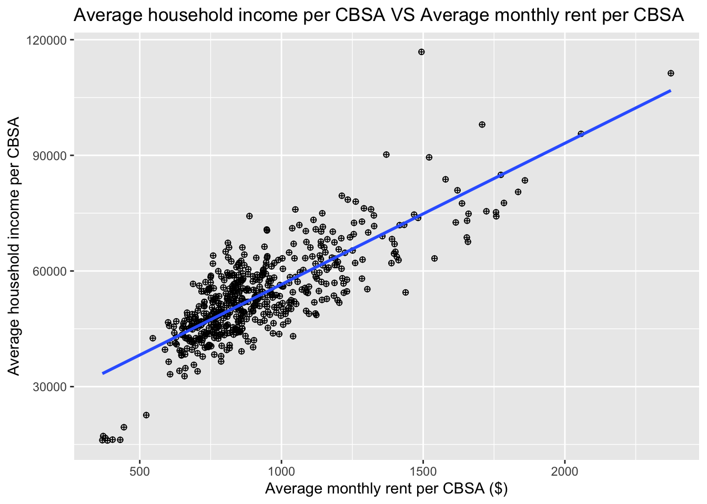
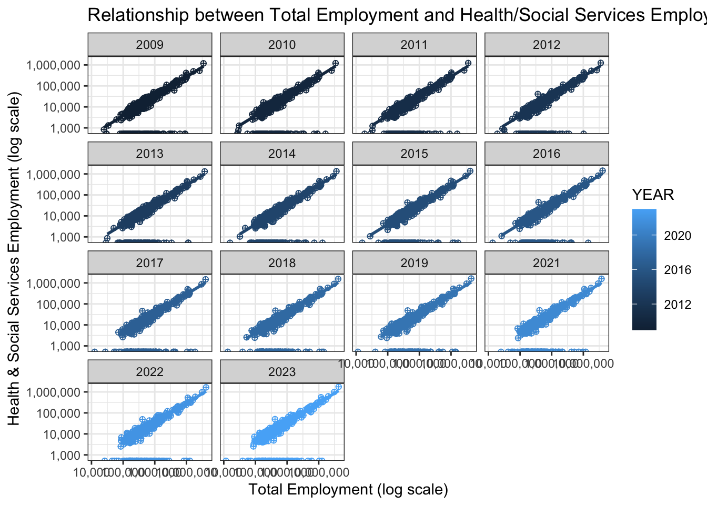
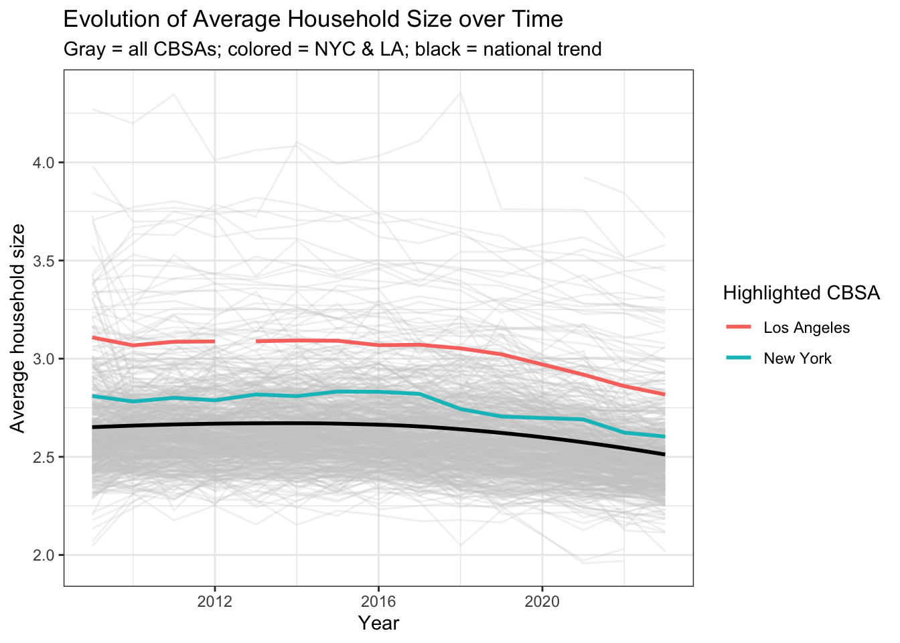
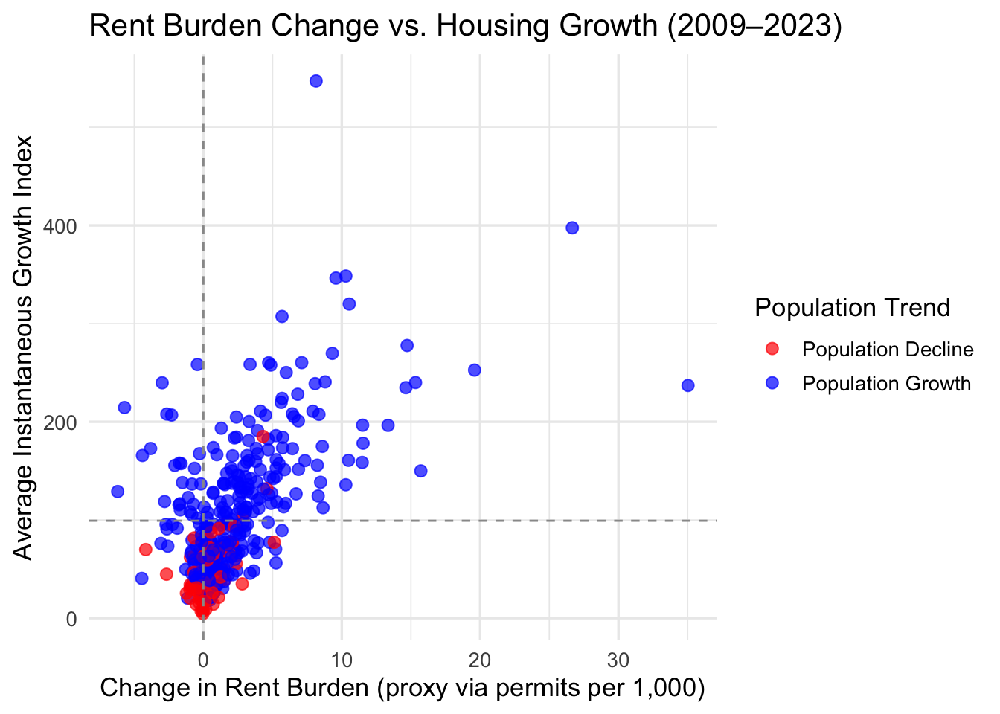
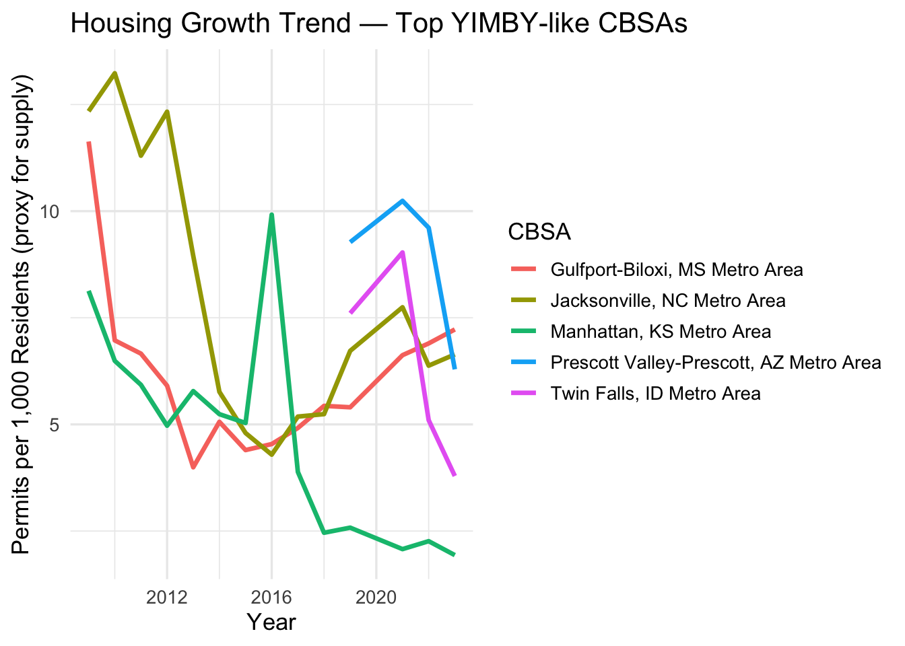

Mini-Project #02: Making Backyards Affordable for All
Author
Xuejian Wang
Introduction
Housing affordability is a growing challenge in many U.S. cities. This project, “Making Backyards Affordable for All,” uses census and housing data to identify where YIMBY (“Yes In My Backyard”) policies have improved housing supply and reduced rent burdens. The goal is to show how data-driven housing policies can make cities more affordable and sustainable.
Data Acquisition
In this project, two data sources are employed. My goal is to explore the areas where the increase of permits will increase the population, the industry types, and finally is beneficial to households income and people’s wages. This analysis could be as a reference when politicians make YIMBY-related policies and whether this kind of policies could benefit their reelection prospects.
US Census Bureau’s Annual Community Survey
INCOME
RENT
POPULATION
HOUSEHOLDS
PERMITS
The Bureau of Labor Statistics’ Quarterly Census of Employment and Wages
INDUSTRY_CODES
WAGES
Data Integration and Initial Exploration
1. New Housing units
The largest number of new housing units in the decade from 2010 to 2019 permitted by the CBSA is 482,075.
Code
# PERMITS from 2010 to 2019PERMITS_2010_2019 <- PERMITS |>filter(year >=2010& year <=2019) |>group_by(CBSA) |>summarize(total_permits =sum(new_housing_units_permitted, na.rm =TRUE)) |>ungroup()# Join table: Combine with INCOME to get “NAME”INCOME_NAME <- INCOME |>select(GEOID, NAME) |>distinct()CBSA_PERMITS_NAME_max <-left_join(PERMITS_2010_2019, INCOME_NAME, join_by(CBSA == GEOID)) |>slice_max(total_permits, n=1)library(DT)datatable( CBSA_PERMITS_NAME_max,colnames =c("CBSA", "Total Permits", "Name"),options =list(searching =FALSE, info =FALSE))
2. Spike in Albuquerque Housing Permits in 2021 Likely Due to COVID-19 Delays
The table shows top 5 new housing units permitted in Albuquerque. In 2021, Albuquerque permitted 4021 new housing units, which was the most. Compared to the others ranking from second to fifth, the permitted data 4021 in 2021 is too high, which could be that the data in 2020 was delayed due to the Covid, and added to the year 2021 to release altogether.
5. Finance and Insurance Wage Share in NYC Peaked in 2015
The first table shows fractions of total wages in the NYC CBSA that was earned by people employed in the finance and insurance industries. The second table demonstrates that this fraction peaked in 2015.
6.1. The relationship between monthly rent and average household income per CBSA in 2009.
The scatter plot shows the relationship between average monthly rent and average household income per CBSA in 2019. Each point represents a CBSA (metropolitan area), and the blue line indicates the linear trend. 1. There is a strong positive correlation between rent and income — areas with higher average household income tend to have higher average rents. 2. Most CBSAs cluster around moderate rent and income levels, while a few outliers (top right) have both very high rent and income. 3. This pattern suggests that housing affordability and income levels rise together across regions.
Code
# combine datarent_income <- RENT |>filter(year ==2019) |>left_join(INCOME, join_by(GEOID == GEOID)) |>group_by(GEOID) |>summarize(total_monthly_rent =sum(monthly_rent, na.rm =TRUE) , total_household_income =sum(household_income, na.rm =TRUE), count_per_CBSA =n(),avg_monthly_rent_per_CBSA = total_monthly_rent / count_per_CBSA,avg_household_income_per_CBSA = total_household_income / count_per_CBSA )ggplot(rent_income, aes(x=avg_monthly_rent_per_CBSA, y=avg_household_income_per_CBSA)) +geom_point(shape=10) +stat_smooth(method="lm",se=FALSE) +xlab("Average monthly rent per CBSA ($)") +ylab("Average household income per CBSA") +ggtitle("Average household income per CBSA VS Average monthly rent per CBSA")

6.2. Evolution of Health Care Employment vs. Total Employment Across CBSAs
The relationship between total employment and total employment in the health care and social services sector (NAICS 62) across different CBSAs. Design your visualization so that it is possible to see the evolution of this relationship over time.
Each year shows a strong positive relationship between total employment and health/social services employment across CBSAs.
The slope and spread are consistent over time, but the points shift slightly upward in later years.
This suggests the health and social services sector’s share of total employment has gradually increased.
Code
# combine dataEmployment <- WAGES |>group_by(YEAR,FIPS) |>summarize(total_employment =sum(EMPLOYMENT, na.rm =TRUE) , total_employment_in_healthSocial_sector =sum(EMPLOYMENT[INDUSTRY ==62], na.rm =TRUE), healthSocial_sector_fraction = total_employment_in_healthSocial_sector / total_employment,.groups ="drop" )ggplot(Employment, aes(x = total_employment, y = total_employment_in_healthSocial_sector, color = YEAR)) +geom_point(shape=10) +stat_smooth(method ="lm", se =FALSE) +scale_x_log10(labels = scales::comma) +scale_y_log10(labels = scales::comma) +labs(title ="Relationship between Total Employment and Health/Social Services Employment",x ="Total Employment (log scale)",y ="Health & Social Services Employment (log scale)" ) +theme_bw()+facet_wrap(~YEAR, ncol =4)

6.3. The evolution of average household size over time. Use different lines to represent different CBSAs.
The plot shows the evolution of average household size over time across all CBSAs in the United States. Each thin gray line represents a CBSA, while New York (teal line) and Los Angeles (red line) are highlighted for comparison. The black line shows the national trend based on a LOESS smoothing curve. 1. Overall trend: The national average household size has remained relatively stable from 2010 to 2023, with a slight decline in recent years. 2. City comparison: 2.1 Los Angeles consistently shows a higher average household size than both the national average and New York. 2.2 New York stays close to the national trend but slightly above it in most years. 3. Variation among CBSAs: The large spread of gray lines suggests substantial regional differences in household size across the country.
Code
library(gghighlight)# combine datahouseholds_population <- HOUSEHOLDS |>left_join(POPULATION, join_by(GEOID == GEOID, year == year, NAME == NAME), relationship ="many-to-many") |>group_by(year, GEOID, NAME) |>summarize(total_households =sum(households, na.rm =TRUE) , total_population =sum(population, na.rm =TRUE), avg_household_size = total_population / total_households,.groups ="drop" )households_population <- households_population |>mutate(city =str_extract(NAME, "^[^–-]+"), # 提取连字符前的第一个城市，如 "New York"highlight = city %in%c("New York", "Los Angeles") )ggplot(households_population, aes(x = year, y = avg_household_size, group = GEOID)) +# 灰色背景线：所有 CBSAgeom_line(data =~subset(.x, !highlight), color ="grey80", alpha =0.25) +# 高亮线：纽约 & 洛杉矶geom_line(data =~subset(.x, highlight), aes(color = city), linewidth =1) +# 黑线：全国 LOESS 趋势stat_smooth(aes(group =1), method ="loess", se =FALSE,color ="black", linewidth =1) +labs(title ="Evolution of Average Household Size over Time",subtitle ="Gray = all CBSAs; colored = NYC & LA; black = national trend",x ="Year",y ="Average household size",color ="Highlighted CBSA" ) +theme_bw()

Building Indices of Housing Affordability and Housing Stock Growth
1. Rent Burden
This analysis examines the rent burden — the share of household income spent on rent — for the New York Metropolitan Area over time. To make comparisons easier, the values were standardized so that 100 represents the national average rent burden in 2009, the first year of the dataset. 1. The New York Metro Area consistently shows a rent burden above the national average (rent burden index > 100). 2. The index increased from about 110 in 2009 to around 116 in recent years, indicating that housing costs have grown faster than incomes. 3. This suggests increasing housing affordability pressure in the New York region compared to the national trend.
# Find metros with highest and lowest rent burden in latest yearlatest_year <-max(income_rent$year, na.rm =TRUE)hi_lo <- income_rent |>filter(year == latest_year) |>arrange(desc(rent_burden)) |>mutate(rank =row_number()) |>select(rank, NAME, year, monthly_rent, household_income, rent_burden, rent_burden_index)top10 <- hi_lo |>slice_head(n =10)bottom10 <- hi_lo |>slice_tail(n =10)
2. Housing Growth
This analysis measures how quickly each metropolitan area is building new housing compared to its population growth. Overall, strong housing growth in Hawaii and the Southeast, weak growth in Midwest and small inland metros.
2.1 Instantaneous Growth — Top 10
Fastest current housing construction in Salisbury (MD), Myrtle Beach (SC), and several Florida metros — showing strong demand and population inflow.
The visualizations explore how rent burden and housing growth interact across U.S. metro areas from 2009 to 2023. The first chart shows that cities with population growth (blue dots) tend to have higher housing growth, while areas with declining populations (red dots) usually show lower housing activity and stable or rising rent burdens. The second chart highlights the top YIMBY-like metros—those that expanded housing supply steadily while controlling rent pressure. Overall, the results suggest that consistent housing construction supports population growth and helps stabilize rent burdens over time.
3.1 Rent Burden Change vs. Housing Growth (2009–2023)
This scatter plot shows the relationship between changes in rent burden (horizontal axis, measured here by permits per 1,000 residents as a proxy) and average housing growth (vertical axis). 1. Blue dots represent CBSAs with population growth, while red dots show areas with population decline. 2. Cities in the upper-left quadrant (high housing growth + decreasing rent burden) are likely YIMBY successes, meaning they added housing supply fast enough to ease rent pressures. 3. Most CBSAs cluster around small positive growth, suggesting moderate housing expansion relative to demand.
Code
# Summarize by CBSA for change in metrics across study period ----cbsa_summary <- housing_idx |>group_by(NAME, CBSA) |>summarize(rent_burden_start =first(na.omit(permits_per_1000)),rent_burden_end =last(na.omit(permits_per_1000)),rent_burden_change = rent_burden_end - rent_burden_start,avg_inst_index =mean(inst_index, na.rm =TRUE),avg_rate_index =mean(rate_index, na.rm =TRUE),avg_composite =mean(composite_index, na.rm =TRUE),total_pop_growth =last(population) -first(population),.groups ="drop" ) # Scatter plot: housing growth vs rent-burden proxy ----ggplot(cbsa_summary, aes(x = rent_burden_change, y = avg_inst_index)) +geom_point(aes(color = total_pop_growth >0), size =2.5, alpha =0.7) +geom_vline(xintercept =0, linetype ="dashed", color ="gray60") +geom_hline(yintercept =mean(cbsa_summary$avg_inst_index, na.rm =TRUE),linetype ="dashed", color ="gray60") +scale_color_manual(values =c("red", "blue"),labels =c("Population Decline", "Population Growth")) +labs(title ="Rent Burden Change vs. Housing Growth (2009–2023)",x ="Change in Rent Burden (proxy via permits per 1,000)",y ="Average Instantaneous Growth Index",color ="Population Trend" ) +theme_minimal(base_size =13)

3.2 Housing Growth Trend — Top YIMBY-like CBSAs
This line chart tracks permits per 1,000 residents over time for the top YIMBY-like CBSAs identified from the previous plot. 2.1 Each line represents one metro area. 2.2 These cities generally maintained strong or improving housing permit activity across the years, even during national slowdowns. 2.3 It shows that sustained housing construction correlates with lower long-term rent pressure and population growth stability.
Code
# Select likely “YIMBY” CBSAs (strong growth + falling rent burden + pop gain) ----yimby_cbsa <- cbsa_summary |>filter(rent_burden_change <0, avg_inst_index >mean(avg_inst_index, na.rm =TRUE), total_pop_growth >0) |>arrange(rent_burden_change) |>slice_head(n =5) |>pull(NAME)# Line plot: time trend for these YIMBY metros ----housing_idx |>filter(NAME %in% yimby_cbsa) |>ggplot(aes(x = year, y = permits_per_1000, color = NAME)) +geom_line(size =1.2) +labs(title ="Housing Growth Trend — Top YIMBY-like CBSAs",x ="Year",y ="Permits per 1,000 Residents (proxy for supply)",color ="CBSA" ) +theme_minimal(base_size =13)
Warning: Using `size` aesthetic for lines was deprecated in ggplot2 3.4.0.
ℹ Please use `linewidth` instead.

Policy Brief
To tackle rising rents and limited housing supply, this bill creates a federal YIMBY incentive program rewarding cities that expand housing and reduce rent burdens. A sponsor from Houston represents a successful YIMBY city with steady growth, while a co-sponsor from New York highlights areas struggling under NIMBY restrictions. The policy benefits construction and trade workers through job creation and helps teachers and healthcare staff live near work affordably. Data from the 2022 ACS show metros with more young adults (ages 25–34) experience stronger housing growth, underscoring the need to attract and retain younger residents. By linking federal funding to housing growth, rent burden, and millennial population share, this bill promotes affordability, mobility, and economic vitality. In short, it helps cities build homes, retain talent, and grow smarter.
Code
library(dplyr)library(tidycensus)library(ggplot2)# --- Pick a millennial proxy variable from ACS ---# (Example: age 25–34; update 'young_vars' if you prefer a different proxy)# B01001_007 etc. are age/sex buckets; the exact codes depend on the cut you want.# Safer approach: sum the 4 buckets for 25–34 across male/female.young_vars <-c(male_25_29 ="B01001_012",male_30_34 ="B01001_013",female_25_29 ="B01001_036",female_30_34 ="B01001_037")# Total population variabletotal_var <-"B01001_001"# 5-year ACS (e.g., 2018–2022)acs_year <-2022# Get young-adult counts (sum four buckets)young_df <-get_acs(geography ="metropolitan statistical area/micropolitan statistical area",variables = young_vars,year = acs_year) |>group_by(GEOID, NAME) |>summarise(young =sum(estimate, na.rm =TRUE), .groups ="drop")# Get total populationtotal_df <-get_acs(geography ="metropolitan statistical area/micropolitan statistical area",variables = total_var,year = acs_year) |>transmute(GEOID, total_pop = estimate)# Compute share of young adultsmillennial_share <- young_df |>left_join(total_df, by ="GEOID") |>mutate(young_share =100* young / total_pop) |>select(GEOID, young_share)# --- Make CBSA in housing data comparable to ACS GEOID (character, 5 digits) ---housing_idx_chr <- housing_idx |>mutate(CBSA_chr =sprintf("%05d", as.integer(CBSA)))# --- Join and plot ---housing_youth <- housing_idx_chr |>left_join(millennial_share, by =c("CBSA_chr"="GEOID"))ggplot(housing_youth, aes(x = young_share, y = composite_index)) +geom_point(alpha =0.7, color ="#0072B2") +geom_smooth(method ="lm", se =FALSE, color ="darkorange") +labs(title ="Millennial Share vs Housing Growth (YIMBY Composite)",subtitle =paste0("ACS 5-year ending ", acs_year),x ="Share of population aged 25–34 (%)",y ="Composite Housing Growth Index" ) +theme_minimal()